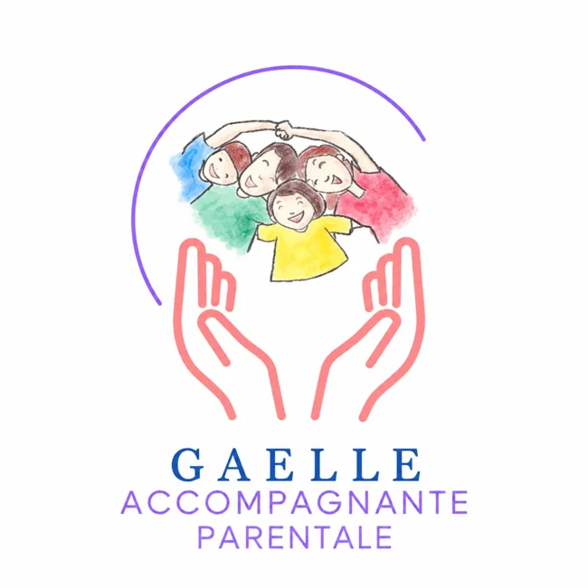

Les accompagnements
Explorez les prestations de Gaëlle autour du sommeil, des émotions et du développement de l’enfant, de la naissance à 12 ans.
BabyShow accompagne les rencontres avec Gaëlle, accompagnante parentale. Découvrez des ressources sur la parentalité, testez vos connaissances et gardez le contact, dans une application simple et conviviale.
Application utilisée notamment lors du Salon Baby · Fonctionnement partiel hors ligne

Les possibilités de BabyShow
À explorer pendant votre visite, puis à retrouver pour poursuivre l’échange.
Explorez les prestations de Gaëlle autour du sommeil, des émotions et du développement de l’enfant, de la naissance à 12 ans.
Répondez à 5 ou 10 questions sur le sommeil de bébé, consultez les explications et découvrez des repères utiles. Accessible hors ligne.
Indiquez vos coordonnées et vos besoins pour être recontacté. Les demandes peuvent être enregistrées hors ligne avant synchronisation.
Retrouvez le site de Gaëlle et ses possibilités de prise de rendez-vous.
Une fonctionnalité dédiée à l’enregistrement, à l’activation et au suivi des bons cadeaux achetés sur place.
Simplicité & confiance
Les questionnaires restent accessibles sans connexion. Les coordonnées ou les informations de bons cadeaux saisies sur une tablette peuvent être stockées localement, puis synchronisées vers Firebase lorsque la connexion est disponible.
L’espace d’administration sécurisé permet à Gaëlle de retrouver les demandes, d’organiser ses rappels et de gérer les bons cadeaux.
Les informations transmises sont utilisées pour donner suite aux demandes, assurer leur suivi ou gérer les bons cadeaux. Le quiz ne nécessite pas d’identification nominative.
Lire notre politique de confidentialitéGaëlle — Accompagnante parentale
BabyShow est un support à la rencontre, pas un outil de diagnostic médical. L’accompagnement reste humain et adapté à chaque famille.